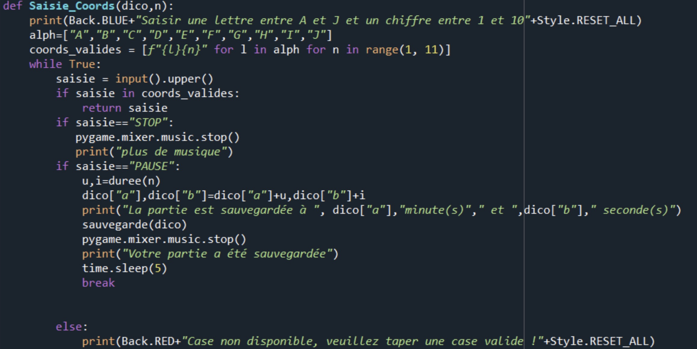

Programmation
XO Brainer — Jeu développé en Python.
Développement d’un jeu de stratégie en Python dans le cadre d’un projet de programmation.

Présentation
Réalisation en binôme du jeu XO Brainer en Python. Le jeu repose sur un plateau où les joueurs cherchent à aligner cinq éléments selon plusieurs critères. Le programme est organisé autour d’une boucle de jeu et de fonctions dédiées à l’affichage, à la saisie et aux conditions de victoire.
Contributions techniques
- Organisation du programme autour de fonctions spécialisées.
- Génération et affichage des grilles de jeu.
- Gestion des saisies et détection des conditions de victoire.